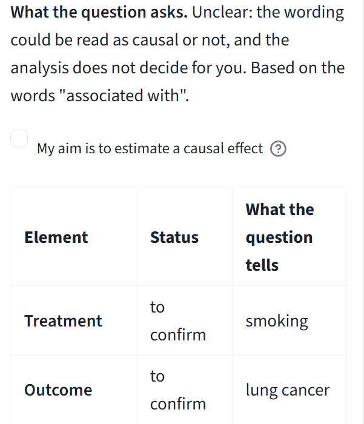
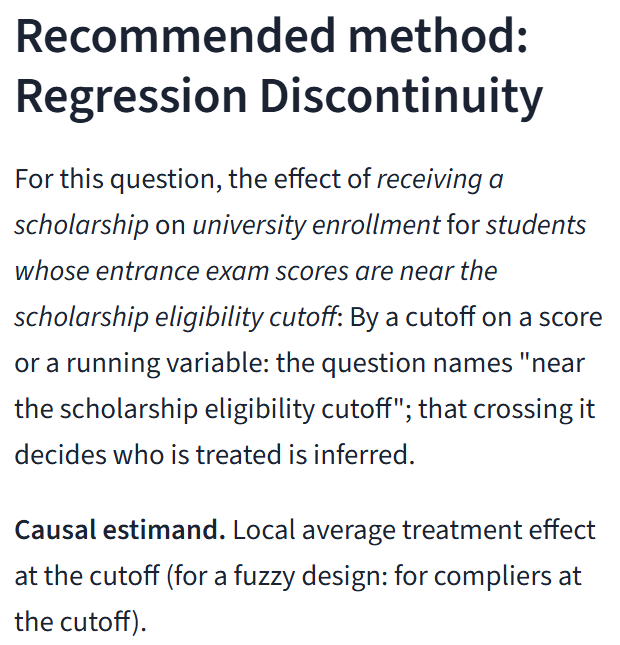

Causal Lab
A lab for choosing a causal method
01 · The question
It reads your question first.
You type
Research question
Is
smoking
To confirm
associated with
Unclear
lung cancer?
To confirm
No method yet
Do you want a causal effect?

The live app, 13 Nov 2026
02 · The method
It picks a method only once you confirm.
1
A causal effect is asked
2
A cutoff decides who is treated
3
You confirm the form
4
Regression discontinuity

The live app, 13 Nov 2026
03 · The main result
And shows you where your design breaks.
True effect
−0.50
Average estimate
−0.264
Test stays quiet
858 of 1,000 worlds
In the 858 quiet worlds
covers 31.6%
misses 68.4%
Source: docs/DEMO_DETAILS.md
Try it.
Causal Lab
Open the app →
esst-prog2.github.io/CAUSAL-LAB-A-Virtual-Laboratory-for-Causal-Research
Thierry Z. Barhame · MSc Statistics and Data Analytics · ELTE